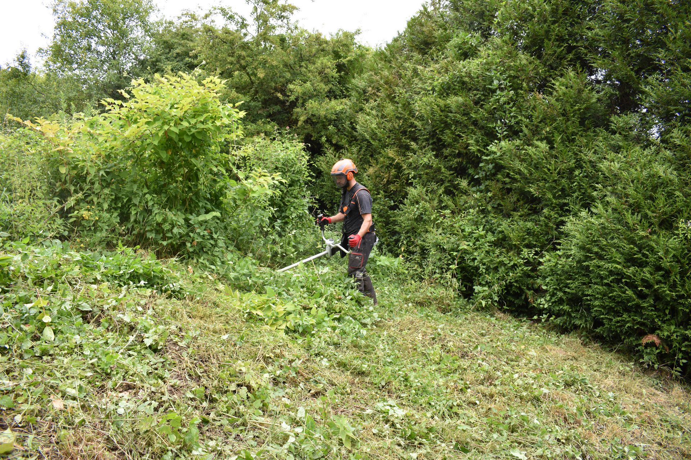

Votre expert en élagage et entretien d’arbres en Essonne
Basé à Athis-Mons, Robert Élagage est votre partenaire de confiance pour l’élagage, l’abattage et l’entretien paysager en Essonne, avec des interventions à Viry-Châtillon, Épinay-sur-Orge, Juvisy-sur-Orge, Savigny-sur-Orge, Massy et alentours. Avec plus de 9 ans d’expérience, nous sommes passionnés par la nature et engagés à fournir des services professionnels de qualité pour particuliers et professionnels.
Notre équipe d’arboristes qualifiés utilise des techniques modernes et sécurisées pour préserver la santé et l’esthétique de vos arbres et jardins. Que ce soit pour une taille esthétique, un abattage complexe ou un aménagement paysager à Athis-Mons ou dans le 91, nous offrons un savoir-faire adapté à vos besoins. Demandez un devis gratuit pour sublimer vos espaces verts !
 Demander un devis gratuitHoraires :
Lundi au samedi : 8h00 – 17h30
Pour tous vos projets d’élagage ou d’entretien paysager en Essonne, contactez Robert Élagage dès aujourd’hui !